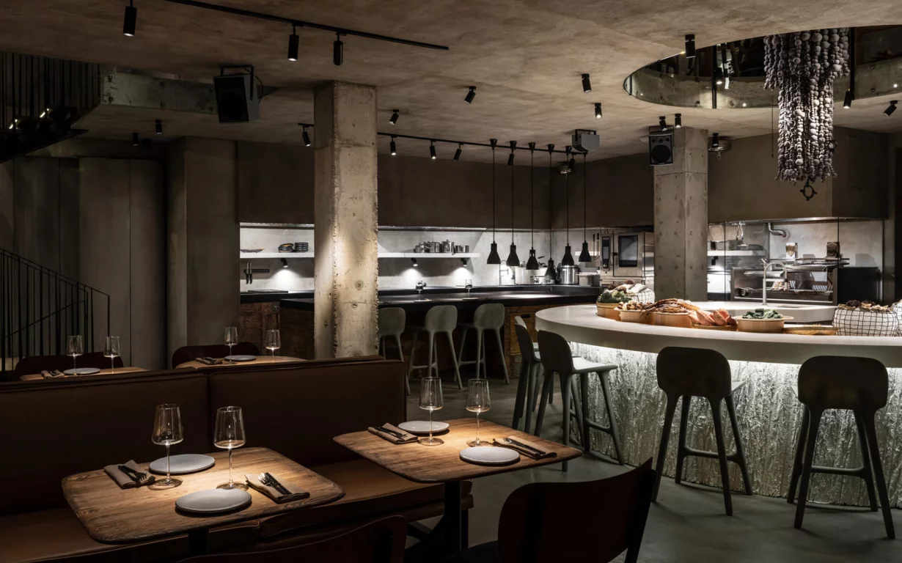
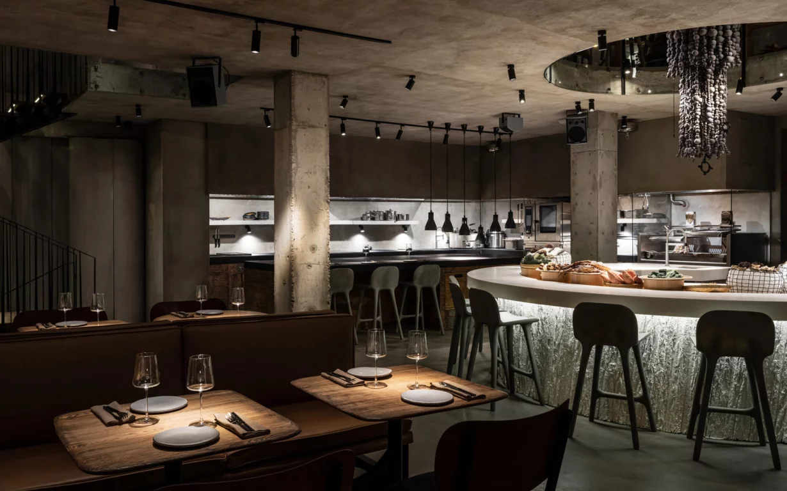

SHE
 

Ресторан SHE — это место, где можно попробовать блюда средиземноморской кухни, такие как тартар из говядины с булочкой бриошь и тертым сыром пармезан, котлету из черной трески с гуакамоле и равиоли с бурратой и черным трюфелем. ости также рекомендуют попробовать салат с крабом, который включает в себя дыню и икру летучей рыбы, а также пиццу с лисичками. В качестве комплимента на день рождения имениннику приносят чизкейк.
- Адрес: Большая Никитская улица, 15с1, Москва
- Оценка: 4,8 / 5
- Часы работы: ежедневно с 8:00 до 00:00